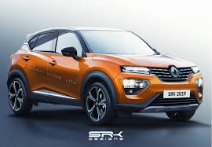

es un fabricante francés de automóviles tanto de lujo como de turismo, vehículos comerciales y automóviles de carreras. Es la marca fundacional del Groupe Renault, conglomerado automotriz que incluye en su paquete accionario a las marcas Alpine (100%), Dacia (99.43%), Samsung (80.1%) y Lada (73.3%), a la vez de ser miembro mayoritario de la alianza mundial Renault-Nissan-Mitsubishi (40%)
Renault ha competido, en innumerables ocasiones como constructor en la Fórmula 1 desde 1977 a 1985, periodo en que desarrolló e introdujo los motores equipados con turbo en dicha disciplina, y, de nuevo, desde 2002 hasta la actualidad. Durante los años en que Renault no compitió como constructor, se dedicó a suministrar motores a varios equipos consiguiendo notables éxitos con Benetton y Williams F1, haciéndose con el título como suministrador de motores entre 1992 y 1997. En 2005 y 2006 ganó el mundial de constructores.
Renault ha sido recompensado con numerosos premios por sus vehículos: una vez Coche del Año de los Estados Unidos de América Motor Trend, 6 veces Coche del Año en Europa, 9 veces Coche del Año en España, 3 veces Coche del Año Autobest en Rusia, Polonia, Turquía etc. o 2 veces Coche del Año en Irlanda y en Dinamarca, por ejemplo.